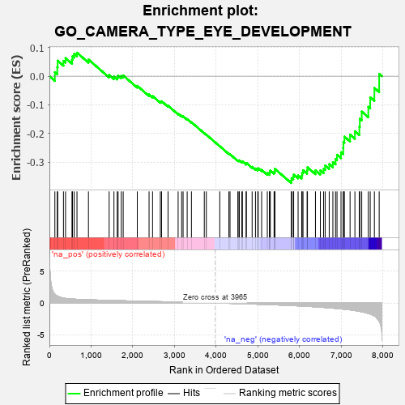
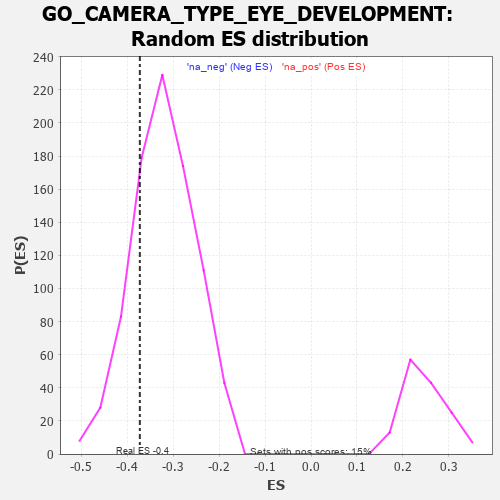

| | | Dataset | 7d |
| Phenotype | NoPhenotypeAvailable |
| Upregulated in class | na_neg |
| GeneSet | GO_CAMERA_TYPE_EYE_DEVELOPMENT |
| Enrichment Score (ES) | -0.37255144 |
| Normalized Enrichment Score (NES) | -1.1642026 |
| Nominal p-value | 0.21637426 |
| FDR q-value | 0.67653286 |
| FWER p-Value | 1.0 |
Table: GSEA Results Summary

Fig 1: Enrichment plot: GO_CAMERA_TYPE_EYE_DEVELOPMENT
Profile of the Running ES Score & Positions of GeneSet Members on the Rank Ordered List
| PROBE | GENE SYMBOL | GENE_TITLE | RANK IN GENE LIST | RANK METRIC SCORE | RUNNING ES | CORE ENRICHMENT | | 1 | SP3 | | | 131 | 1.391 | 0.0143 | No |
| 2 | RORB | | | 189 | 1.097 | 0.0314 | No |
| 3 | WNT16 | | | 198 | 1.072 | 0.0541 | No |
| 4 | DLL1 | | | 337 | 0.760 | 0.0535 | No |
| 5 | BAX | | | 387 | 0.711 | 0.0631 | No |
| 6 | SRF | | | 542 | 0.615 | 0.0572 | No |
| 7 | JMJD6 | | | 553 | 0.613 | 0.0695 | No |
| 8 | PITX3 | | | 594 | 0.596 | 0.0777 | No |
| 9 | HES5 | | | 661 | 0.571 | 0.0820 | No |
| 10 | TDRD7 | | | 936 | 0.498 | 0.0583 | No |
| 11 | PDS5B | | | 1432 | 0.403 | 0.0045 | No |
| 12 | SOS1 | | | 1547 | 0.384 | -0.0014 | No |
| 13 | CDK4 | | | 1626 | 0.370 | -0.0031 | No |
| 14 | RXRA | | | 1647 | 0.365 | 0.0025 | No |
| 15 | MEIS1 | | | 1723 | 0.351 | 0.0007 | No |
| 16 | LRP5 | | | 1769 | 0.342 | 0.0026 | No |
| 17 | BMP7 | | | 2107 | 0.290 | -0.0337 | No |
| 18 | HIPK2 | | | 2389 | 0.247 | -0.0638 | No |
| 19 | VSX1 | | | 2473 | 0.231 | -0.0692 | No |
| 20 | MITF | | | 2659 | 0.205 | -0.0881 | No |
| 21 | DSCAM | | | 2689 | 0.200 | -0.0873 | No |
| 22 | NR2E1 | | | 2844 | 0.177 | -0.1029 | No |
| 23 | HDAC1 | | | 3086 | 0.138 | -0.1304 | No |
| 24 | PAX6 | | | 3170 | 0.127 | -0.1381 | No |
| 25 | FZR1 | | | 3205 | 0.122 | -0.1397 | No |
| 26 | SMAD3 | | | 3303 | 0.105 | -0.1497 | No |
| 27 | MED1 | | | 3405 | 0.089 | -0.1605 | No |
| 28 | NF1 | | | 3713 | 0.040 | -0.1986 | No |
| 29 | SKI | | | 3762 | 0.032 | -0.2039 | No |
| 30 | WNT2 | | | 4084 | -0.021 | -0.2441 | No |
| 31 | TBX2 | | | 4303 | -0.060 | -0.2704 | No |
| 32 | OPA1 | | | 4330 | -0.065 | -0.2723 | No |
| 33 | WNT5B | | | 4517 | -0.098 | -0.2937 | No |
| 34 | NTRK2 | | | 4543 | -0.104 | -0.2945 | No |
| 35 | ABI2 | | | 4554 | -0.106 | -0.2935 | No |
| 36 | GATA3 | | | 4614 | -0.120 | -0.2983 | No |
| 37 | SDK1 | | | 4627 | -0.124 | -0.2970 | No |
| 38 | LHX2 | | | 4716 | -0.143 | -0.3050 | No |
| 39 | DCX | | | 4721 | -0.143 | -0.3024 | No |
| 40 | DLG1 | | | 4860 | -0.169 | -0.3161 | No |
| 41 | FZD4 | | | 4940 | -0.186 | -0.3220 | No |
| 42 | PROM1 | | | 4996 | -0.197 | -0.3246 | No |
| 43 | KLF4 | | | 5005 | -0.198 | -0.3212 | No |
| 44 | DRD2 | | | 5088 | -0.221 | -0.3267 | No |
| 45 | CLCN2 | | | 5224 | -0.250 | -0.3382 | No |
| 46 | CELF4 | | | 5275 | -0.266 | -0.3387 | No |
| 47 | FAT1 | | | 5281 | -0.267 | -0.3334 | No |
| 48 | FKBP8 | | | 5296 | -0.270 | -0.3292 | No |
| 49 | FZD5 | | | 5386 | -0.292 | -0.3340 | No |
| 50 | SOX8 | | | 5404 | -0.296 | -0.3296 | No |
| 51 | ATOH7 | | | 5405 | -0.296 | -0.3230 | No |
| 52 | RDH13 | | | 5797 | -0.405 | -0.3636 | Yes |
| 53 | BBS4 | | | 5806 | -0.407 | -0.3555 | Yes |
| 54 | ARL6 | | | 5847 | -0.417 | -0.3514 | Yes |
| 55 | RING1 | | | 5856 | -0.420 | -0.3431 | Yes |
| 56 | B9D1 | | | 5962 | -0.459 | -0.3462 | Yes |
| 57 | NR2E3 | | | 6048 | -0.488 | -0.3461 | Yes |
| 58 | JAG1 | | | 6060 | -0.494 | -0.3366 | Yes |
| 59 | FBN1 | | | 6080 | -0.499 | -0.3279 | Yes |
| 60 | THRB | | | 6178 | -0.531 | -0.3284 | Yes |
| 61 | FJX1 | | | 6186 | -0.533 | -0.3175 | Yes |
| 62 | CDON | | | 6378 | -0.607 | -0.3283 | Yes |
| 63 | LAMA1 | | | 6496 | -0.659 | -0.3285 | Yes |
| 64 | TTLL5 | | | 6574 | -0.696 | -0.3228 | Yes |
| 65 | TUB | | | 6611 | -0.718 | -0.3114 | Yes |
| 66 | EGFR | | | 6708 | -0.765 | -0.3066 | Yes |
| 67 | WDR19 | | | 6796 | -0.812 | -0.2996 | Yes |
| 68 | AHI1 | | | 6860 | -0.848 | -0.2888 | Yes |
| 69 | HCN1 | | | 6895 | -0.865 | -0.2739 | Yes |
| 70 | NPHP4 | | | 6991 | -0.931 | -0.2653 | Yes |
| 71 | CTNS | | | 7044 | -0.965 | -0.2505 | Yes |
| 72 | MYH10 | | | 7048 | -0.966 | -0.2295 | Yes |
| 73 | OPN4 | | | 7072 | -0.978 | -0.2107 | Yes |
| 74 | MFN2 | | | 7208 | -1.081 | -0.2038 | Yes |
| 75 | TRPM1 | | | 7324 | -1.197 | -0.1918 | Yes |
| 76 | LHX1 | | | 7431 | -1.305 | -0.1763 | Yes |
| 77 | CASP2 | | | 7442 | -1.322 | -0.1483 | Yes |
| 78 | XRN2 | | | 7488 | -1.384 | -0.1233 | Yes |
| 79 | PTF1A | | | 7646 | -1.637 | -0.1068 | Yes |
| 80 | MDM1 | | | 7691 | -1.742 | -0.0738 | Yes |
| 81 | NPHP1 | | | 7791 | -2.041 | -0.0410 | Yes |
| 82 | FBN2 | | | 7906 | -2.873 | 0.0082 | Yes |
Table: GSEA details [plain text format]

Fig 2: GO_CAMERA_TYPE_EYE_DEVELOPMENT: Random ES distribution
Gene set null distribution of ES for GO_CAMERA_TYPE_EYE_DEVELOPMENT